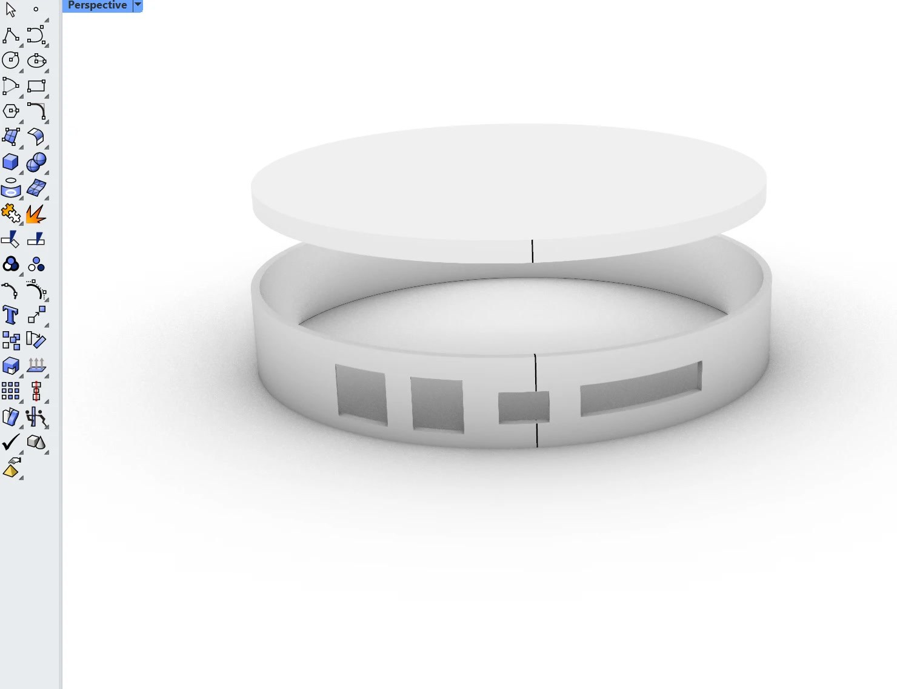
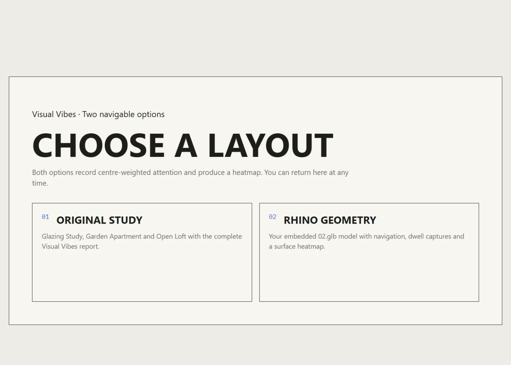
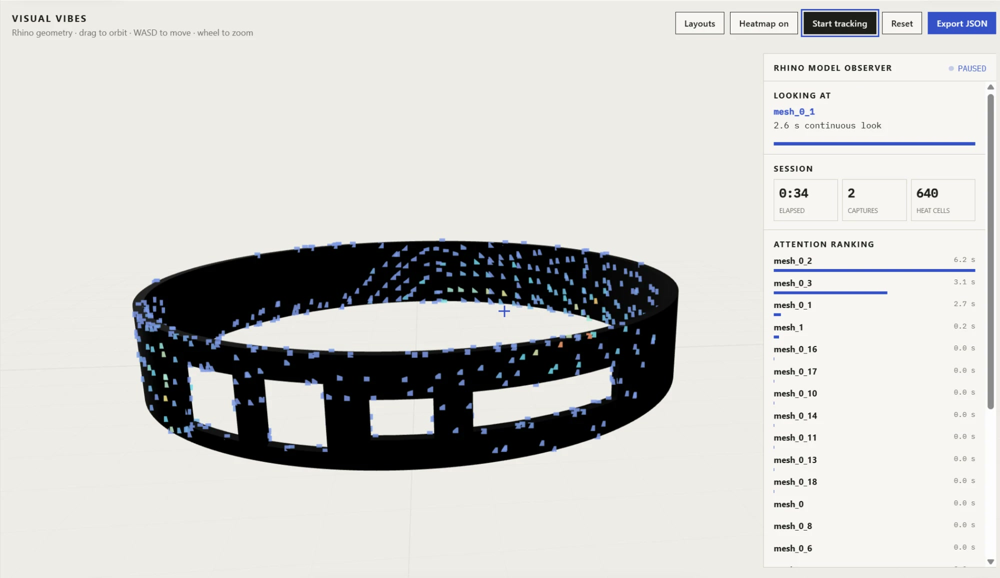

Rhino to the web app
The plug-in also works the other way: objects from Rhino go up to the web app, where a client can pick them as a layout, walk them, and see exactly which ones held their attention.

01
Send the model’s objects up to the web app

02
The original study or the Rhino geometry

03
Surface heat, and every object ranked by look time
Visual Vibes · Rhino geometry in the web app